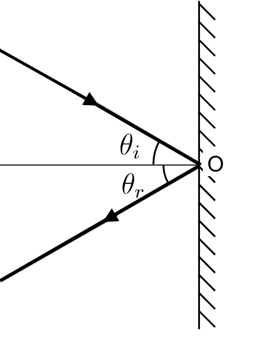

The laws of reflection describe how light (or any other wave) behaves when it encounters a reflective surface, such as a mirror.
When a light ray strikes a reflective surface, the angle $\theta_i$ formed between the incident ray and the normal (an imaginary line perpendicular to the surface at the point of incidence) is the angle of incidence. The angle $\theta_r$ formed between the reflected ray and the normal is the angle of reflection.The incident ray, the reflected ray, and the normal to the surface at the point of incidence all lie in the same plane.
This means that the path taken by the light ray before and after reflection, as well as the normal, all lie in a single two-dimensional plane. This plane is typically visualized as a flat surface that extends through the point of incidence on the reflective surface.
The angle of incidence equals the angle of reflection
Mathematically, $\theta_i = \theta_r$
Images formed in a plane mirror has the following characteristics:
Using the simulation below, adjust the positions of the object and eye to observe how the ray of light reaches the eye from the object. You can also adjust the length and position of the mirror. At certain positions, the image will no longer be visible to the eye as the ray of light will not reflect off the mirror in a direction that leads to the eye.